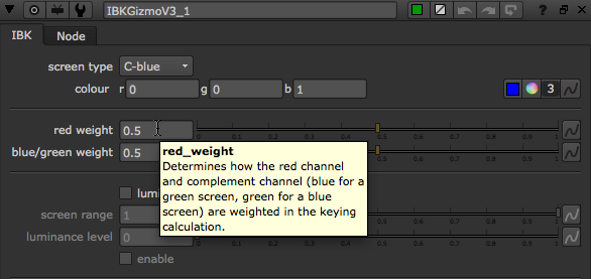
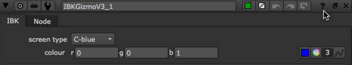

Nuke features several forms of help, in a variety of locations.
Most controls offer concise instructions in the form of tooltips. To display the tooltips, move your mouse pointer over an interface control or a node parameter.

To view a tooltip for a node, move your mouse pointer over the ? icon in the node's Properties panel.
The context-sensitive online help includes a comprehensive description of each node and its parameters. To display these descriptions in your default web browser, click the ? icon in the node's properties panel.

In Nuke, the context-sensitive help content may differ depending on what you've selected as the help source in the Preferences.
| 1. | Press Shift+S on the Node Graph to open the Preferences dialog. |
| 2. | Go to the Behaviors > Documentation tab. |
| 3. | Set documentation source to: |
• local - Use Nuke's built-in help system. This is included in the Nuke installation and does not require an Internet connection.
NOTE: When you click on a ? button on a node, Nuke searches the following locations for HTML files with the same name as the requested node (for example, blur.html):
1. Directories contained in the NUKE_PATH environment variable.
2. The /$HOME/.nuke and /$HOME/.nuke/Documentation directories.
3. Your local plugins directory.
• On Windows, this is either C:\Program Files\Common Files\Nuke\10.5\plugins\ or C:\Program Files (x86)\Common Files\Nuke\10.5\plugins\
• On Mac OS X, this is /Library/Application Support/Nuke/10.5/plugins/
• On Linux, this is /usr/local/Nuke/10.5/plugins/
4. The Nuke installation directory.
• foundry - Use the help system available on our website. This contains the most up-to-date information, but requires an Internet connection.
NOTE: On Windows, you may have to add a firewall program or port exception to view the most up-to-date help from our website. If the connection is blocked, Nuke falls back to the local copy.
• custom - Use your own custom help system.
| 4. | If you set documentation source to local, you can either: |
• enable auto port to automatically assign a free documentation server port, or
• use local port to specify a local documentation server port manually and port range to define a range of ports to attempt. Typically, the local port value should be 1024 or higher. Setting the value to 0 causes a port to be automatically assigned.
NOTE: To be able to use the online help from multiple sessions of Nuke running at the same time, you must enable auto port.
| 5. | If you set documentation source to foundry: |
• the foundry host field displays the documentation server host address.
• use foundry port to specify the documentation server port.
| 6. | If you set documentation source to custom: |
• set custom host to your documentation server host address. This must be an Internet Protocol version 4 (IPv4) address.
• use local port to specify a local documentation server port. Typically, the local port value should be 1024 or higher. Setting the value to 0 causes a port to be automatically assigned.
• use custom port to specify a custom documentation server port.
You can click the main Help menu to access the following:
• Key Assignments - a list of hot keys.
• Documentation - the Nuke Online Help, the Nuke Developer Kit (NDK), and documentation for using Python, TCL, and expressions in Nuke.
• Release Notes - important updates to features and bug fixes.
• Training and Tutorials - Nuke tutorial videos, and a list of other training resources.
• Nukepedia - an online resource containing useful information about all things Nuke.
• Mailing Lists - information on Nuke-related e-mail lists.
• Plug-in Installer - open the Nuke plug-ins page on our website, which gives you easy access to a large selection of plug-ins for Nuke.
Should questions arise that the documentation fails to address, you can visit the Support Portal at support.foundry.com.
|
|